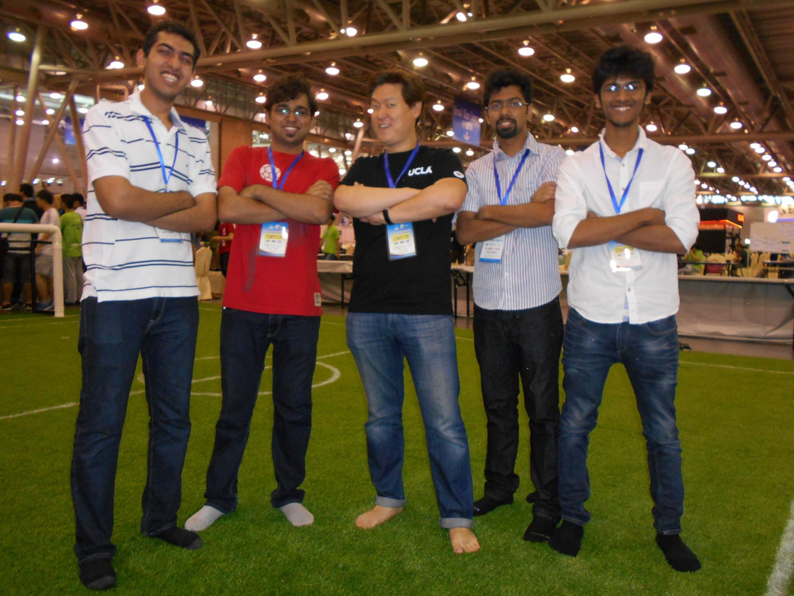

Pratyush Kar
Pratyush Kar
Senior Undergraduate Student
BITS Pilani
|
 |
I am a final year student, currently pursuing Bachelor of Engineering (B.E. Hons), in Computer Science, from Birla Institute of Technology and Science, Pilani, Rajasthan, India (BITS Pilani).
I have a keen interest in computer science. Some of the subjects that are of particular interest to me are computer vision, machine learning, and data mining. Majority of my projects are aligned along these fields.
This website provides some details about my projects, research interests and publications. My resume, which highlights my work in an organized manner, can be found here. In case of any queries or suggestions please feel free to contact me.
|
|